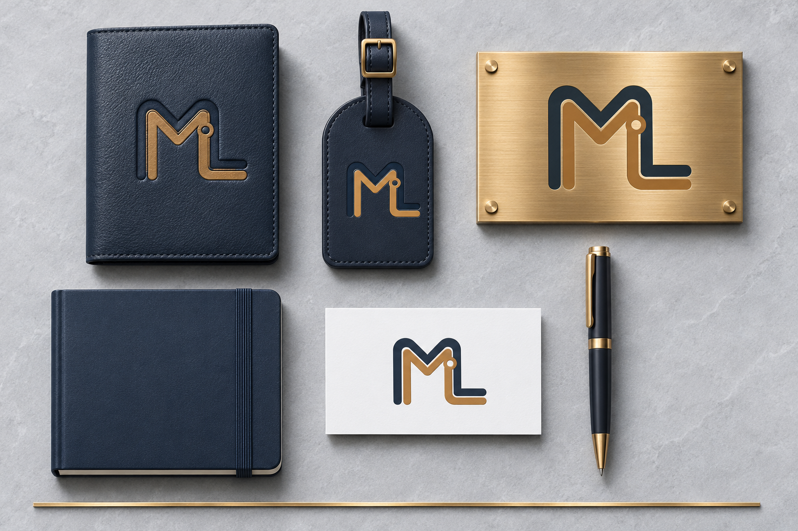
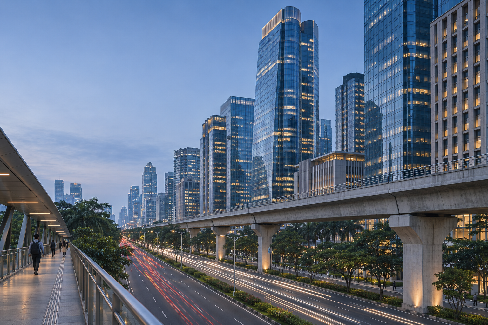
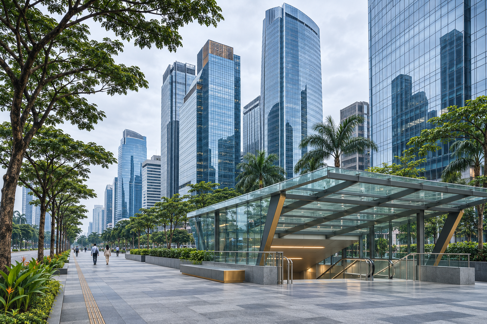
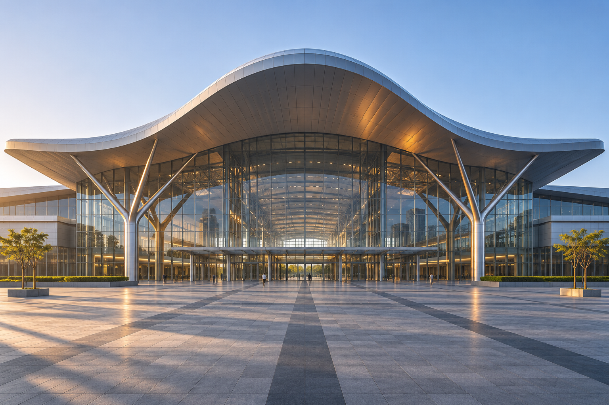
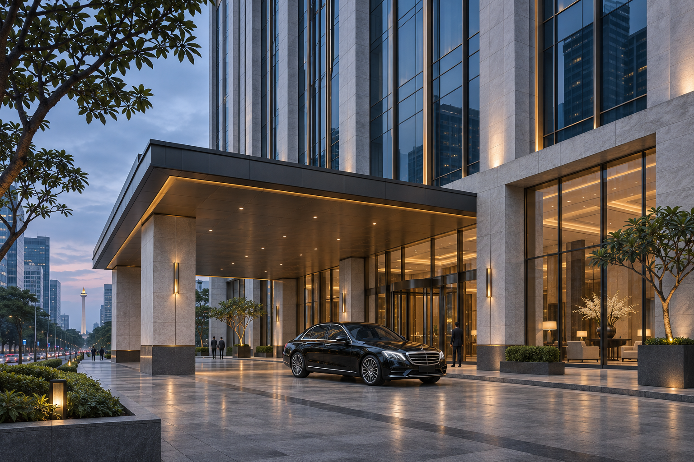
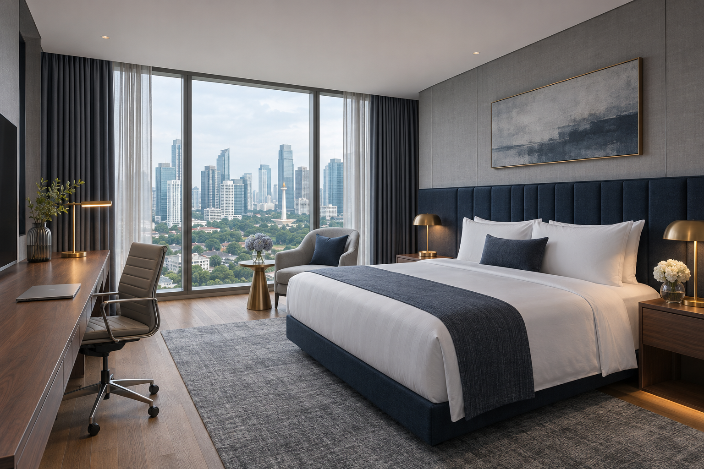
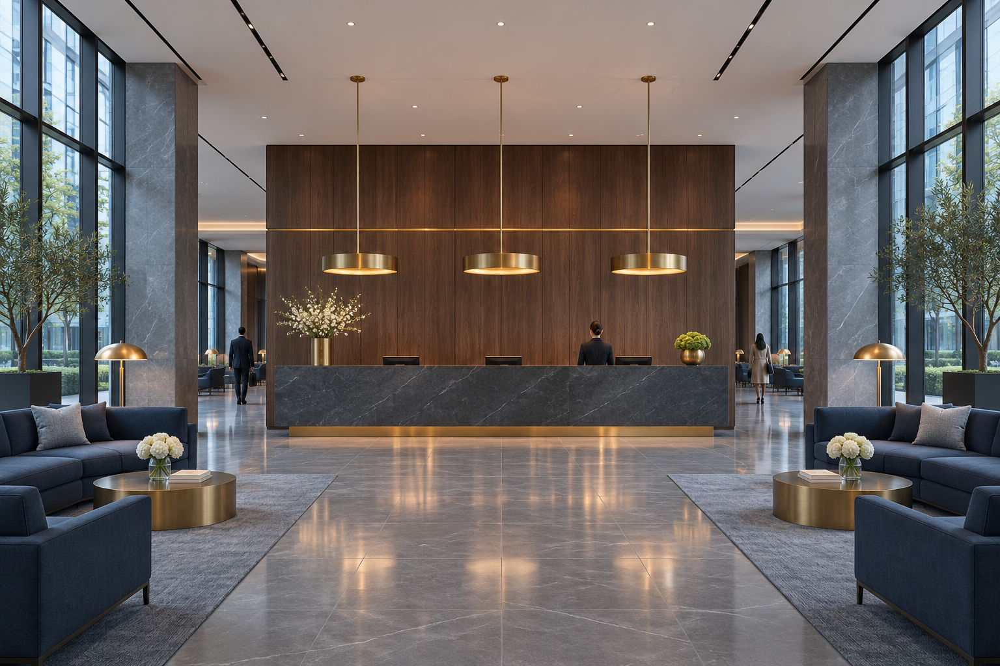
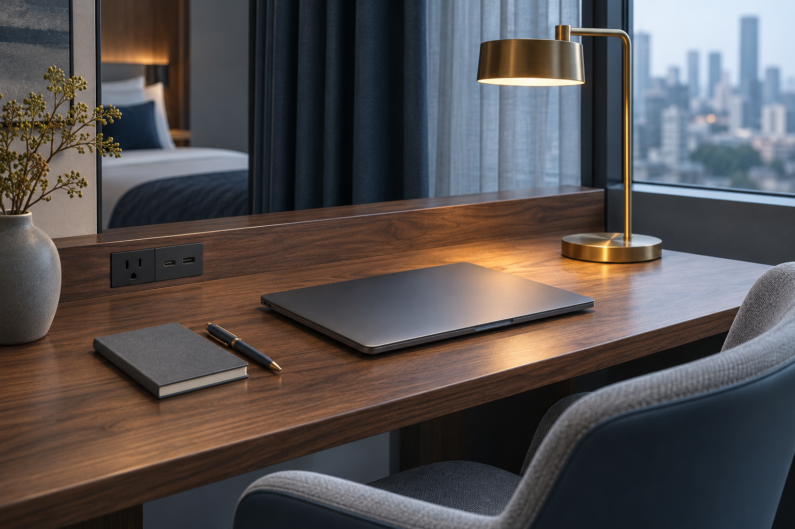
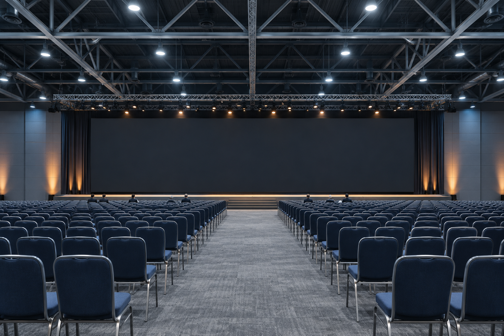

MetroLink Travel
Reservasi hotel, transit, dan MICE untuk perjalanan dinas. Harga dicek langsung saat Anda mencari. — Panduan lengkap identitas merek, sistem logo, palet warna WCAG 2.1 AA, tipografi IBM Plex Sans + Inter, anatomi mesin pencari, dan komponen etalase Ortasys S4.

Posisi Merek & Temuan Riset Desain (Urban & Business Travel)
Arsitektur visual memprioritaskan kejelasan destinasi dan pencapaian cepat ke mesin pencari di layar pertama.
Pemisahan tegas antara tipografi ekspresif pada tajuk dan tipografi fungsional berangka tabular pada harga & tanggal.
Seluruh token warna diuji terhadap standar kontras WCAG 2.1 AA (minimal 4,5:1 untuk teks dan 3:1 untuk batas komponen UI).
Transparansi harga ritel penuh dalam IDR dengan janji pengecekan harga langsung (live price check).
Master Mark, Varian Latar, Clear Space & Aplikasi Merek
Digunakan pada permukaan terang (#F3F5F7, #FFFFFF) dengan ruang bebas minimal 0,25× tinggi simbol.
Digunakan pada permukaan gelap (#23364D, #17283B) dan bagian footer malam.
Penerapan konsisten pada papan nama, kartu tamu, dan perlengkapan perjalanan.
Token Warna Inti & Derivasi Aksesibilitas
Primary
Primary action, active navigation, key brand anchor
Primary Hover
Hover & pressed state for primary controls
Secondary
Secondary highlights, badges & supporting accents
Tertiary
Warm supporting surfaces & editorial dividers
Accent
Focused emphasis markers & category tags
Background Canvas
Main page canvas & broad section background
Surface
Cards, search console, popovers & modals
Surface Muted
Secondary container contrast & table headers
Text Primary
Headings, body copy & primary data values
Text Muted (Raw)
Metadata, captions & helper descriptions
Border
Hairline card dividers & structural rules
Success
Live price assurance & verified confirmation
Warning
Quota notices & seasonal advisories
Error
Validation alerts & destructive actions
Matriks Verifikasi Kontras WCAG 2.1 AA
Text Primary on Canvas
#202B36 on #F3F5F7
Text Primary on Surface
#202B36 on #FFFFFF
White on Primary CTA
#FFFFFF on #23364D
Primary on Surface
#23364D on #FFFFFF
Derived AA Muted on Canvas
#606B77 on #F3F5F7
Derived Field Border on Surface
#868B90 on #FFFFFF
IBM Plex Sans + Inter
Aa Bb Cc
IBM Plex Sans
Digunakan untuk judul hero, tajuk seksi, dan nama properti utama.
Aa 0123
Inter
Rp 2.450.000 · 9–12 Nov 2026 · 2 Dewasa (Tabular Numerals aktif).
Skala Sudut & Kontainer
Pola Tata Letak & Komponen Khas Preset 08
Hero Architecture (Compact Executive KPI Strip Banner):
Instead of a tall lifestyle banner, the hero is a compact, high-efficiency corporate header (`py-8`) displaying metropolitan district telemetry (`JAKARTA CBD`, `SENAYAN MICE`, `ITDC NUSA DUA`) and a 3-metric SLA readout bar (`< 650ms Live Sync`, `1 Gbps Workstation Verified`, `SNAP BI / DOKU Tax Invoice`).
Search Engine UI (Inline Single-Row Corporate Ribbon Bar):
A dense, single-row horizontal toolbar (`rounded-xs`) where mode tabs, district selector, check-in/out dates, delegate/room steppers, and the navy `Query Rates` button sit flush in a unified executive command ribbon.
Inventory Section Layout (High-Density Tabular Ledger List):
Replaces vertical photo cards with a structured **Corporate Property Ledger Table** (`divide-y divide-line`): each row displays a compact thumbnail + property code (`[ML-01]`), a middle column for CBD/MRT transit proximity & workstation specs, a policy/tax compliance column, and a right-aligned tabular price & instant booking column.
Corporate Capabilities (4-Column SLA Specification Bar):
A crisp 4-column specification grid detailing instant confirmation, e-Faktur PPN 11% readiness, net-final transparency, and multi-bank virtual account clearing.
Aset Visual Khusus MetroLink Travel (./assets/*.webp)








Pedoman Implementasi Positif
- ✓ Do prioritize destination, dates, occupancy, and property facts.
- ✓ Do make the interface efficient and predictable.
- ✓ Do use city imagery to add character.
- ✓ Do show only verified location and business amenities.
Batasan Kontrak Produk Ortasys S4
- ✕ Don't turn the storefront into an enterprise admin dashboard.
- ✕ Don't imply corporate billing, approval workflows, or negotiated rates without support.
- ✕ Don't use tiny metadata or dense tables on mobile.
- ✕ Don't use brass as low-contrast text.
- ✕ Don't expose supplier net rates or internal agent data.